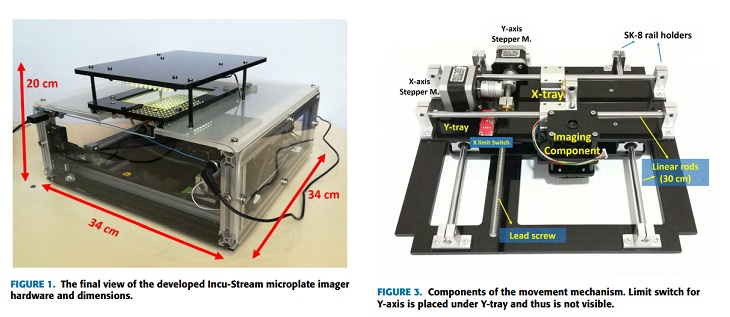

Incu-Stream: Inverted Bright-Field Microscopy and Automated Mechanical Scanning for just $184

Incu-Stream is an open-hardware microscopy setup designed for bright-field cell imaging of incubated microplates. The design is all laid out in a paper written by Güray Gürkan and Koray Gürkan, with nothing hidden in a supplementary packet this time.
The system is specifically aimed at creating a microplate compatible inverted bright-field microscope system that can be used in incubators. To come up with the outrageous price of $184, they use a low-cost CMOS image sensor, an inverted varifocal CCTV lens and an array of light emitting diodes.
The paper includes a table of used items and costs, circuit diagrams and pictures of assembly. If you are looking into building this device, the Github has CAD files for easy 3D printing, PCB layout files for easy circuit creation, and software.
Since the device is intended to be used inside an incubator, it does lead us down the rabbit hole of DIY incubator design. Which is maybe the most common piece of equipment we see actually built in the labs we work in, and something we have never covered...